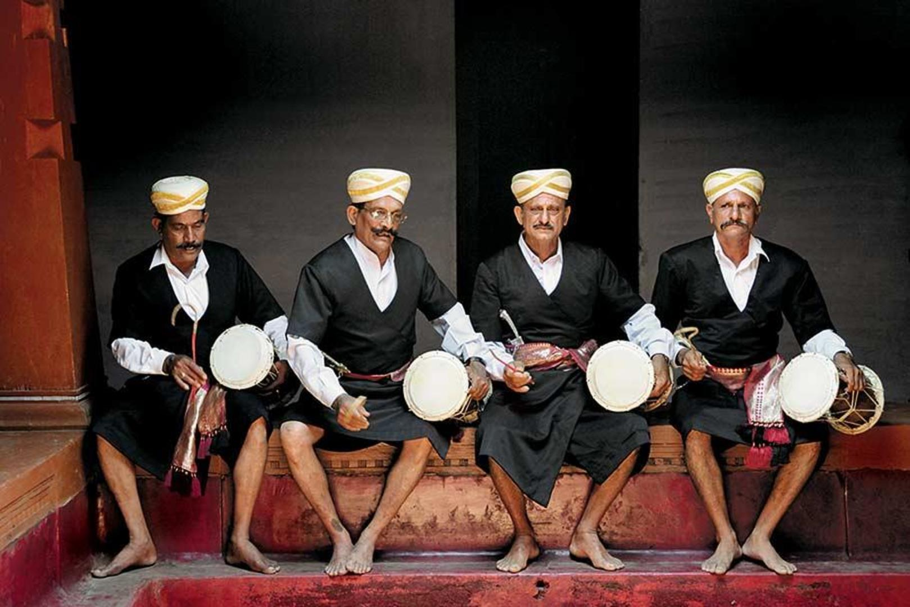
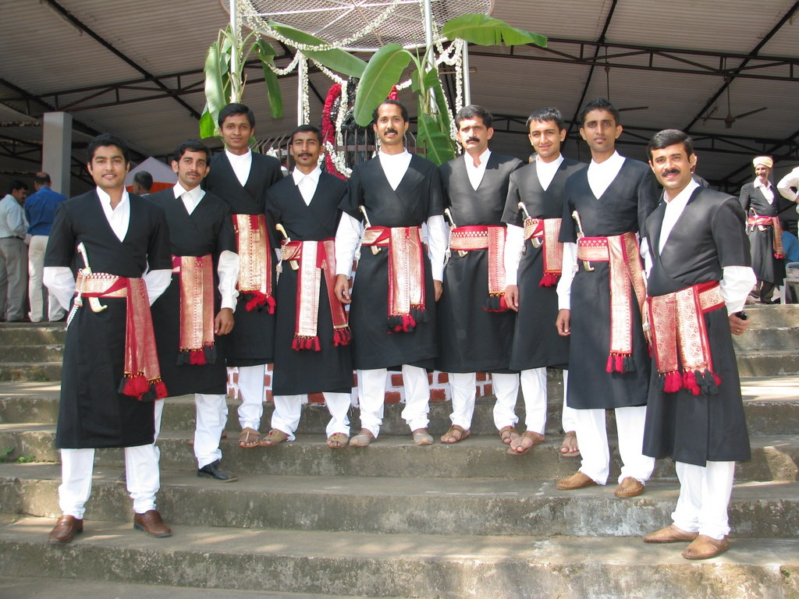
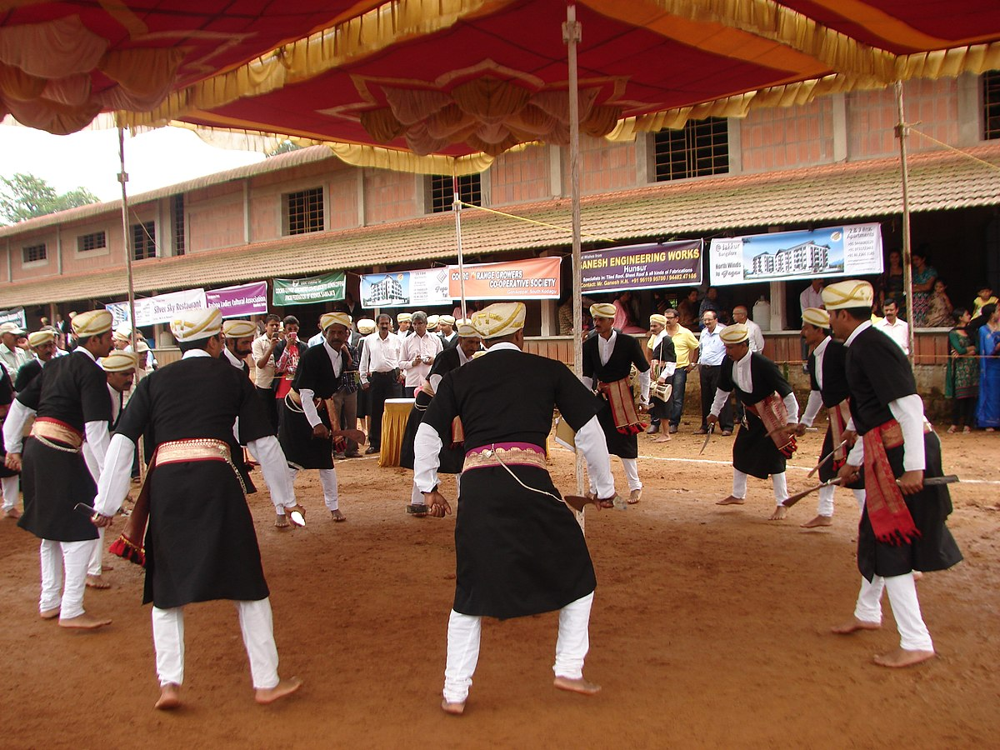
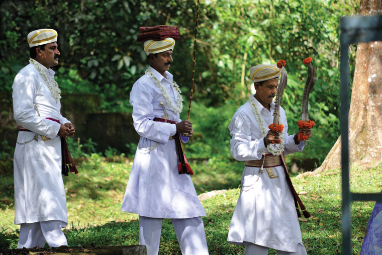
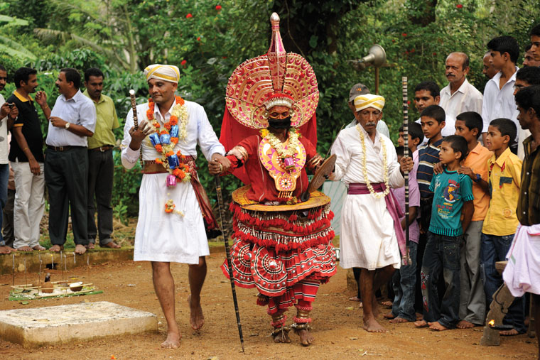

Travel is Life.Couldn't agree more?
we not just discuss travell,
We make it happens

Coorg Culture and Traditions
Coorg Culture and Traditions
Often referred to as the ‘Scotland of India’, this district is home to the ancient clan with extraordinary martial abilities called ‘Kodavas’. When compared to the more than 7 billion population of the world, Kodavas are a mere 1.5 lakhs and thus constitute an ethnic minority of the world.
Besides being a terrestrial belle, this place is also known for its unique native inhabitants. The history of Kodavas showcases that the people of this tribe have a soldier-like charm of their own for their ancestors lived the life of warriors staying in jungles and fighting invaders to protect their community.
The traditional attire and rituals of the ‘Kodavas’ are strong enough evidence that relates to their ancestral characteristics, albeit there are more than 11 theories making it unclear a confirmation on the actual origin of this community. Their astute valour and chivalry set them apart from their neighbouring communities.
Kodava Festivals:
galleryOne of the most popular festivals of Kodavas is ‘Kailapodh’. This festival honours and worships the weapons carried by Kodavas, for they are known for their macho appearance since time immemorial. The festival of harvest celebrated by the Kodava community is known as ‘Puthari’. Coffee and pepper plantation contribute to the population’s income source.
It was common practice until recently that these festivals were conducted in the form of grand ceremonies and used to light up the entire region. The most striking feature of this community is the equality amongst men and
Kodava dance:
The women folks of Kodava tribe have a traditional form of dance which is called ‘Umma that’. They perform this dance in a group to the tunes of songs dedicated to ‘kAvEramma’ (the river Cauvery goddess). On the other hand, the dance performed by men folks is called ‘Bolak-aat’ that represents their heroism and gallantry.
There is another group of menfolk who recite Balo Patt or Dudi Patt (or ancient ballads) to honour the principle people present in a gathering.
Kodava Food:
Kodavas are very fond of their cuisine and women of this tribe usually sit together for a variety of their unique food preparations. Some of the most delectable and sumptuous food items one may find in every Kodava household are Kadambuttu (Prepared with Rice), Otti (Roti Prepared using rice) and Pandi curry (usually a pork delicacy).
The spice distinctive of this region is Kachampuli that is used as a souring agent by the Kodavas.
Kodava Traditional Dress:

The Kodava tribe’s uniqueness is also reflected in their attire. Males wear a thick black ‘Kupya Chale’ and a dagger ‘Peeche Kathi’ which gives them a robust appearance. Similarly, females have a different take on how they drape their saris. They tuck their pleats at the back unlike the traditional form of draping the saris across India.
Kodava Wedding and Dance:

The Kodavas also have a unique marriage ritual. Here, there is no priest who conducts the ceremony but the elders perform all the activities. The sacred lamp with Lord Cauvery’s picture is considered the only witness of a Kodava wedding. During a marriage, people of the community assemble to have a wedding feast. Once the wedding ritual has completed, the attending men and women folks dance and perform a tradition (Ganga Pooja) to the music played by a band.
The Coorg culture is beautiful and has a mystic charm to it. Kodava community constitutes one of the most significant aspects of the Coorg tradition. However, due to globalization, the younger generation of Kodavas is moving out of the district to other parts of Karnataka or other states.
Coorg has given the country some of the bravest of men and women in all the major areas of society. Field Marshall K.M. Kariappa and General K.S. Thimmaiah have their names embedded in the history of the nation and they belonged to this community. In today’s era, some of the popular Kodava mentions from the sports and silver screen are Rohan Bopanna, Poovamma, Robin Uthappa, Nikhil Chinnappa, Kaveri Ponnappa, Joshna Ponnappa, Gulshan Devaiah, and the list goes on.
However, in the wake of modernization, the magnanimity of this tribe is slowly diminishing and is also deafening the senses of the modern generation. This situation calls for the people of this community as well as the government to educate the younger generation about the values and the strength of their culture and make the population who have gone astray come back to build the community back again.

Without any doubt, Coorg is unique. It’s a place everybody has heard about, wants to visit, but doesn’t exactly know where it is situated or how to get there.
But the common consensus is; it has lovely weather, is green and dense coffee plantation land. True, but there is a lot more to it, notwithstanding the Kodavas, the proud and dignified people of the land. Elegant women with sharp features and daring and handsome men. A place steeped in old customs, where cultural norms are strong, where ancestors are worshipped
Coorg, or Kodagu which is it´s original name, has green rolling mountains, 4,102 square kilometers of it, lies in the Western Ghats. The easiest way to reach there is to fly into Bangalore and drive down the distance of 240 kms. Or from Mysore, 120 kms away, where there is a railhead.

When my ancestors found their way to the hills of Coorg, over a thousand years ago, they found a wilderness so sublime, that they built small, open air shrines, and set aside large tracts of land for worship, and the land itself became for them, sacred. The only hint you will receive of this world today is the faint rhythm of drumbeats from forest groves, carried on the clear air from the valleys to the hilltops.
Where the Coorgs came from, the enigma of their customs, social traditions, laws and dress are questions that have been debated to exhaustion. “Are you Greek?” is a question I have been asked so many times, even by Greeks themselves, that sometimes I have been tempted to say yes! But I was born Coorg, and would never exchange that identity, with all it means for any other. One winter, in the decade I spent researching and documenting in the villages of Coorg,
a Professor of Archaeology from Athens, Antonios Vasileiadis.

The beauty of Coorg is a wounding kind, snagging your soul, breaking down all defences. It seeps into the soul, and made poets of the rough warriors who settled there, every man a poet and singer, accompanying himself on a small, hand-held drum. They composed endless ballads, recording battles and feuds, tales of love, sorcery and magic, and the heroes of the land. And they never tired of singing of the beauty that
they breathed in the landscape. You can still hear them singing these songs, at festivals and gatherings of the clans, moving and faintly melancholy.
Mandalpatti is a ridge that looks backwards at the western hills of Coorg, where the river Kaveri rises, sacred, dazzling, and east, to the imposing bulk of Kotebetta, where Coorg men, women and children gather twice a year, to dance and sing their old songs. The Pushpagiri peak rises to the north -west,
presiding over waves of purple and silver hills, and great clusters of pink-tinged clouds, looking down on a patina of green forest and field that lies across the land, close set, like moss – if this is not heaven, it is certainly halfway there.

Amongst the Coorgs, a new elite emerged, of those willing to move with the times, westernised, smart, and breaking with tradition. But the spirit of Coorg survived, continuing to live in her villages. Men and women still remain fiercely loyal to their clans, and although the fighting stopped generations ago,
there are echoes of history everywhere – a man’s everyday dress, now worn only on formal occasions, includes a short dagger tucked into the waistband, ready for use. A bridegroom arrives armed with a heavy war knife, putting it aside only while being blessed by elders and guests, or eating, and even within the premises of sacred shrines,
there are warlike dances, striking and parrying with knives. Hunting and battle
was the heart of their world, and is still reflected in many of their customs, even today.
Coorg draws many visitors now; its people are generous and hospitable by tradition and the land has a rough beauty that is haunting – in a way, this spells its own, sad end. The place I love draws further away each time, but I persist in seeking it out, and find it - at the source of the Kaveri, groups of bards sing, invoking the Goddess,
and as we watch, we are finally answered, in an out of season storm, of thunder, lightning, and blinding rain – and then the peaks emerge again, indigo, under a wash of cloud, sublime. An oracle, face painted in dizzying swirls turns, elaborately outlined eyes, fierce, intent, and disconcertingly, picks me out from the crowd. The words are unintelligible;
a headman intervenes and translates – a prophecy, and a blessing.
Walking up the rocky slopes of the Kotebetta peak, to a sweep of hills that takes all words and thought away, except one – the understanding of why my ancestors held this land sacred. And then, I don’t envy the Greeks their famous, radiant, attic light – just grateful I have Coorg. Kids Culinarie